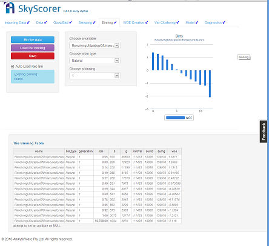
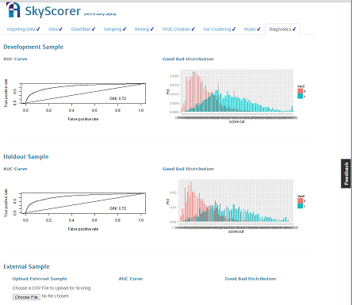

I am a risk analytics professional with 8+ years of experience in the consumer/retail SME risk analytics experience. Please see a portfolio of my work

SAS: certfied to advanced level
Want to hire someone with proven SAS skils? Why settle? Hire someone who is certfied to advanced level. I am also certifed in predictive analytics
Basel PD/EAD/LGD
I have experience building Basel models including PD, EAD, LGD. Also looking for someone with Scorecard build experience? I know profit-based cut-off modelling too.

Strong technical skills including SAS, R, VBA
Polished presentation skills and excellent spoken and written communication skills